A Brief Look into Brain Structure and Function
Chapter 3, Nunez
Complex Systems & Levels of Analysis
3.1 Are Brains Like Other Complex Systems?
- Complexity science
- Features of complex systems
- Nested hierarch
- Descriptive labels:
- analogues
- metaphors
- cartoons
3.1 Are Brains Like Other Complex Systems?
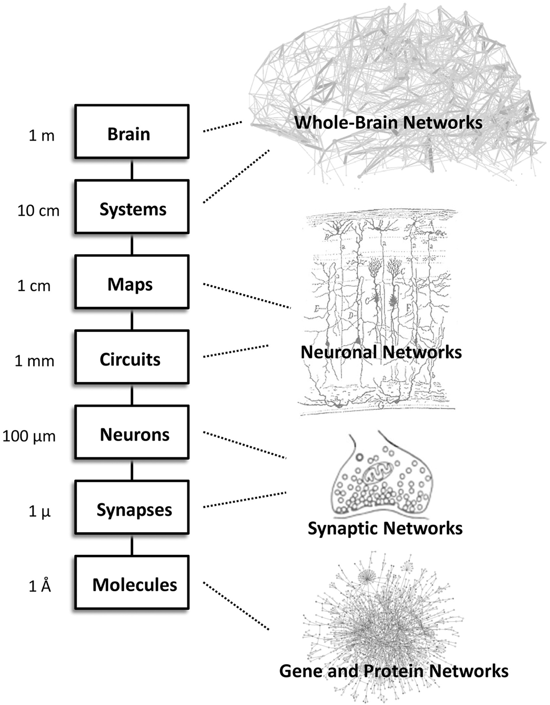
- Scale of measurement
- Non-local interactions
- Multi-scale description
- Circular causality
- Dynamic patterns
- Behavior of a system
- Emergent properties
3.2 The Human Brain at Large Scales
- CNS
- Brainstem
- Cerebellum
- Cerebral cortex
- Local-Global
interactions
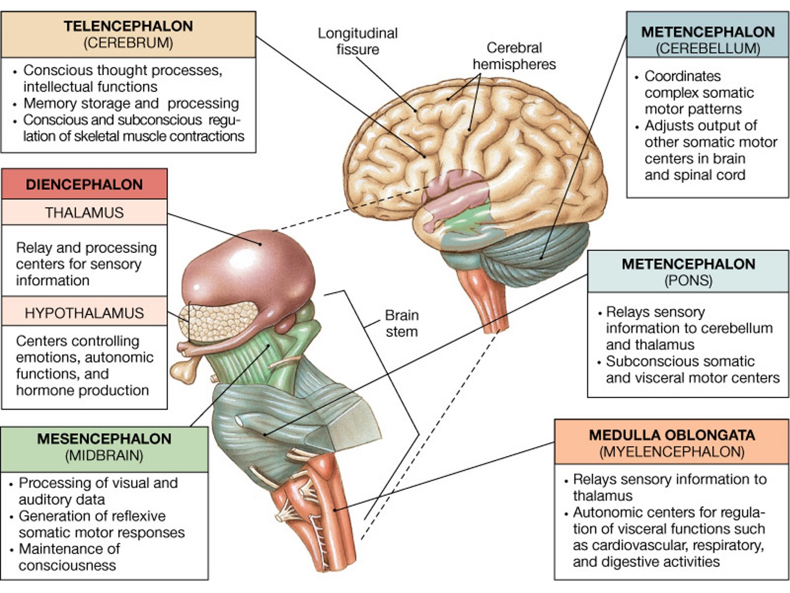
3.3 Drugs, NT systems, & Brain Dysfunction
- integration vs isolation
- Fans sitting in a football stadium
- Functional localization
- Global coherence
- Binding
- Integration
- Isolation
- Local-global issue (local/regional/global mechanisms)
- Neurophysiological Methods
- Functional magnetic resonance imaging (fMRI)
- Positron emission tomography (PET)
- Electroencephalogram (EEG)
- Dynamic Complexity

Brain as a Complex System
3.4 Brain Inputs & Outputs
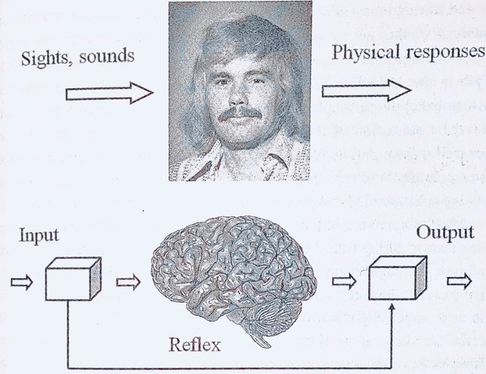3.5 Chemical Control of Brain & Behavior
- Neurotransmitter released to synaptic cleft bound by receptor ion-channels
- Post-synaptic potential: spatially distributed as current flow in a 3D field
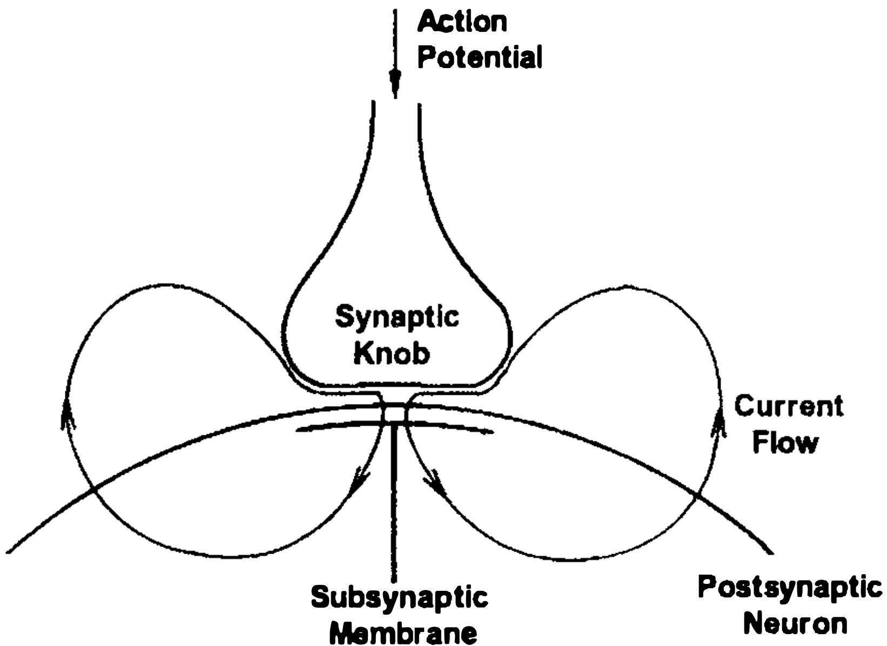
3.5 Chemical Control of Brain & Behavior
- Neurotransmitter released to synaptic cleft bound by receptor ion-channels
- Post-synaptic potential: spatially distributed as current flow in a 3D field
- Many small, localized fields spatially summate to produce a larger
vector J
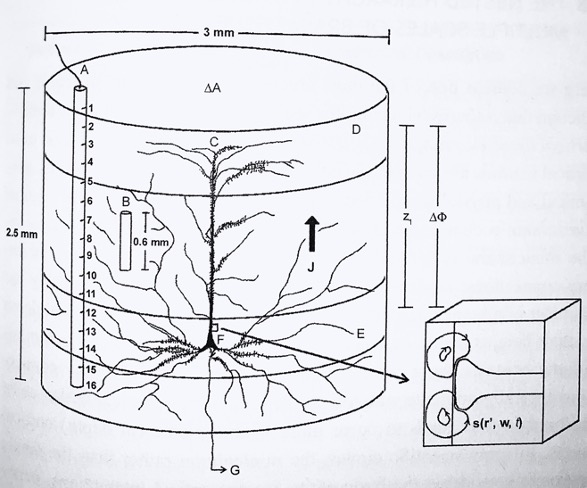
3.6 Electrical Transmission
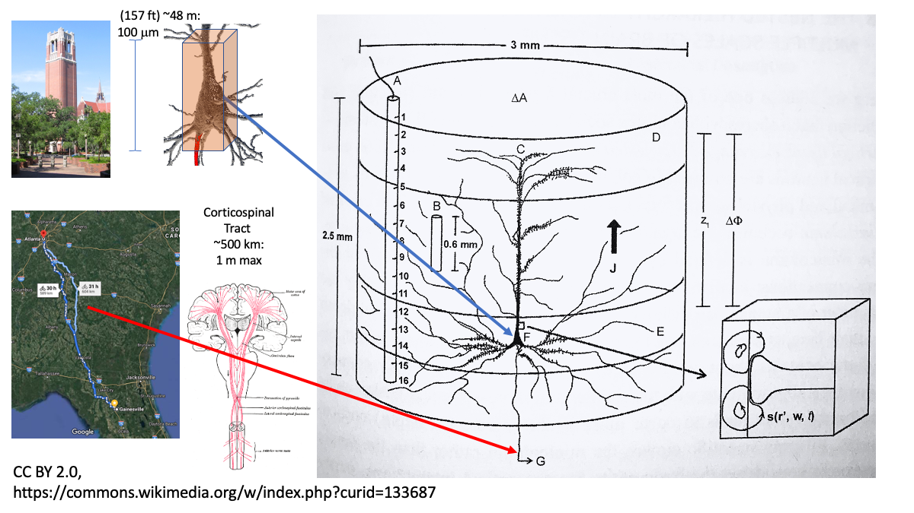3.7 The Cerebral Cortex
- Pyramidal neuron
- Basket interneuron (inhibitory)
- Myelinated axon
- Macro-column (ipsilateral/contralateral projection)
- Thalamocortical fibers (TC)
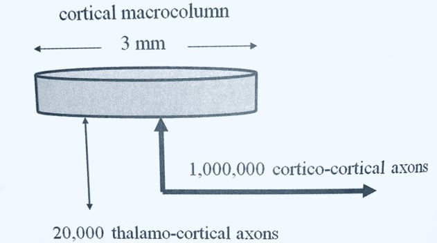 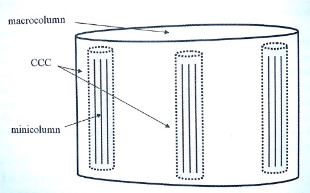 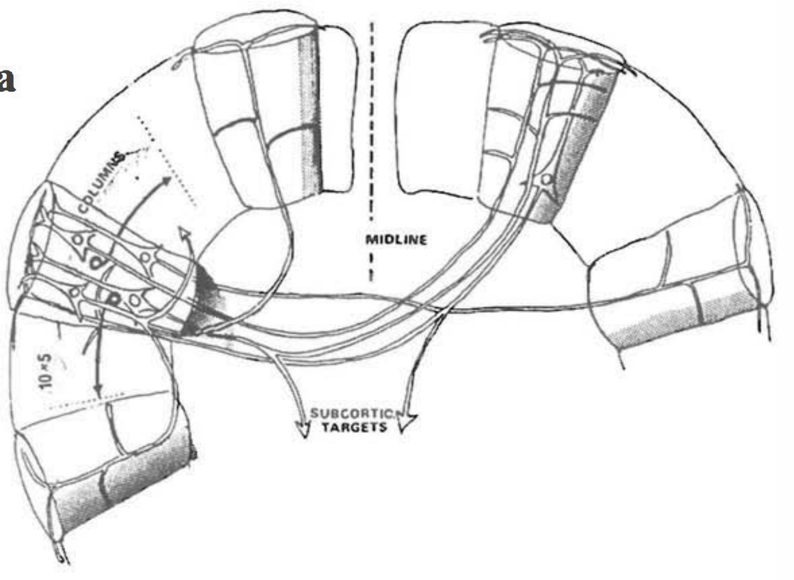
Dynamic complexity
How does a dynamic complex system function?
3.8 Nested Hierarchy of Cerebral Cortex:
Multiple Scales of Brain Tissue
- Nested hierarchy
- Cortical mini-column
- Cortico-cortical column (CCC)
- Cortical macrocolumn
- Neuromodulators & large scale dynamics
- Global coherence vs functional segregation
- Epilepsy
- Cross scale interaction
3.8 Nested Hierarchy of Cerebral Cortex:
Multiple Scales of Brain Tissue
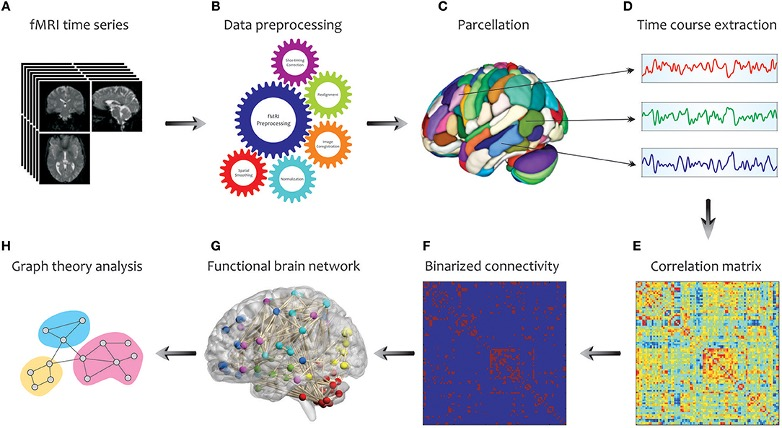3.8 Nested Hierarchy of Cerebral Cortex:
Multiple Scales of Brain Tissue
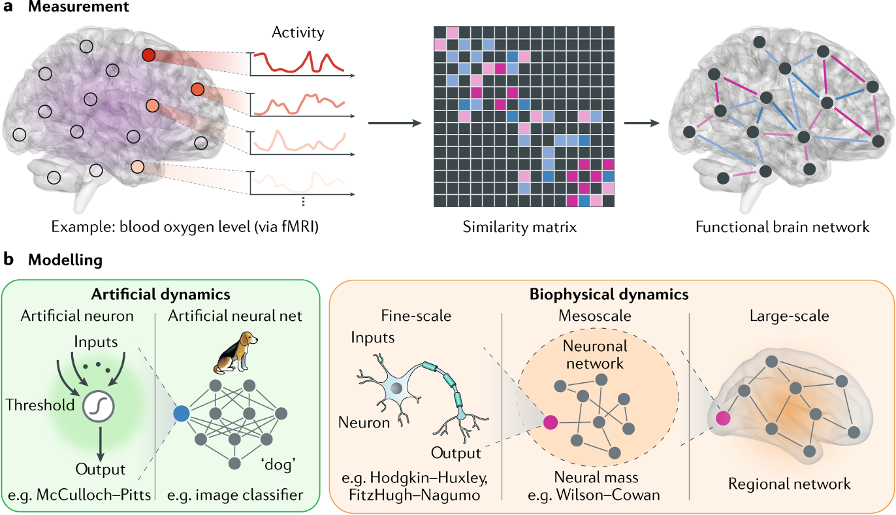3.9 Cortico-Cortical Connections Are Non-Local
- Connectome
- Dynome (not in book)
- Path length
The Original Social Network & 5.5 Degrees of Separation
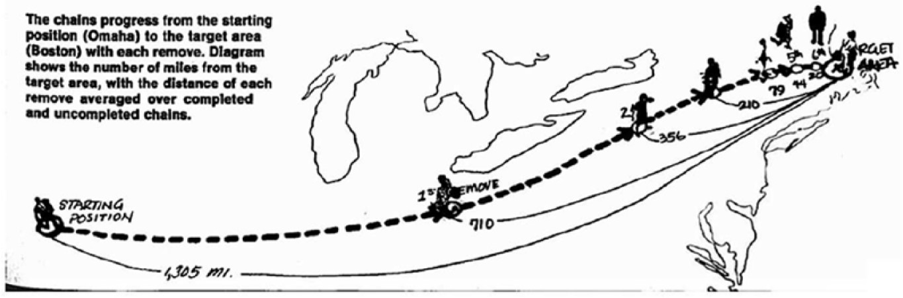
- An illustration of the shortest path between Omaha, NE and Boston, MA in Stanley Milgram’s social network experiment, published in Psychology Today in 1967.
- Here, the results of multiple experiments are represented as a composite shortest path between the source (a person in Omaha) and the target (a person in Boston).
- A letter addressed to the target was given to the source, who was asked to send it on (with the same instructions) to the friend or acquaintance that they thought was most likely to know the target, or someone else who might know the target personally.
- It was found that most letters that eventually reached the correct address in Boston passed through six intermediaries between source and target (denoted 1st remove, 2nd remove, etc.), popularizing the notion that each of us is separated by no more than “six degrees of freedom” from any other individual in a geographically distributed social network.
3.9 Cortico-Cortical Connections Are Non-Local
- A small-world network is a mathematical graph in which most nodes are not neighbors of one another, but the neighbors of any given node are likely to be neighbors of each other. Due to this, most neighboring nodes can be reached from every other node by a small number of hops or steps.
\[L \space \alpha \space log N \]
- Average path length in proportion to logarithm of N , where \(N\) is the number of nodes in the network, and \(L\) is the average path length between nodes.
3.9 Cortico-Cortical Connections Are Non-Local
- Small-world networks tend to contain cliques, and near-cliques, meaning sub-networks which have connections between almost any two nodes within them. This follows from the defining property of a high clustering coefficient.
- Secondly, most pairs of nodes will be connected by at least one short path. This follows from the defining property that the mean-shortest path length be small.
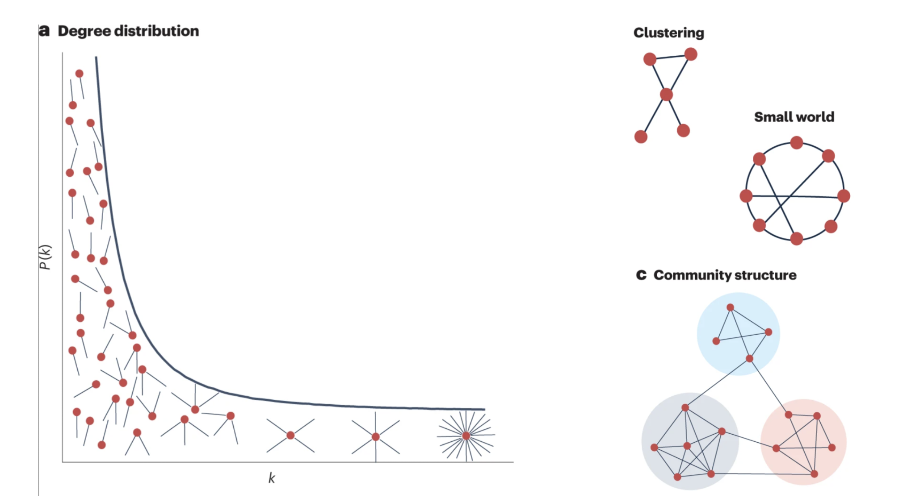 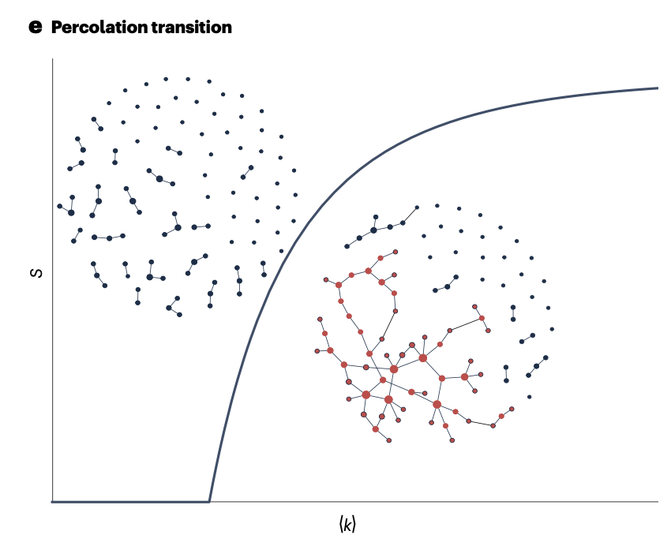
3.10 Human Brain Evolution
- All-or-none vs gradient
- Antonio Damasio’s levels:
- protoself
- core consciousness
- extended consciousness
3.11 What Makes the Human Brain “Human”?
Thalamocortical ratio = \({ \Sigma (cortico-cortical- connections) \over \Sigma (thalamo-cortical-connections)}\)

Ch2
ch2.7 Consciousness Takes Time
- Masking:
- An experimental procedure in which target images are flashed very briefly and conscious awareness is blocked by subsequent images.
- Subliminal:
- Images presented below the threshold of conscious awareness
- Unconscious:
- Brain activity w/o conscious awareness; may rise to level of preconscious.
- Pre-conscious:
- Unconscious activity that directly influences conscious behavior.
- Somatosensory cortex:
- Cortical region w/ sensory input from skin (touch, pain, & temperature).
- Motor cortex:
- Cerebral cortex region involved in planning, control, & execution of voluntary movements.